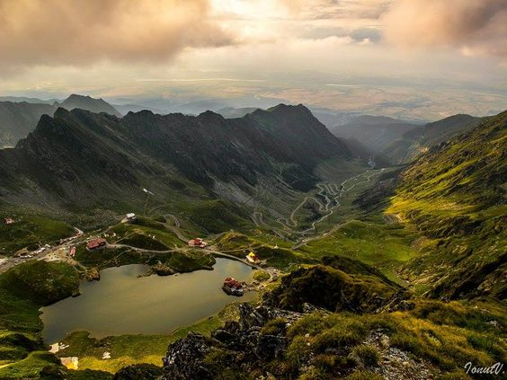

- București – capitala țării, Palatul Parlamentului (al doilea ca mărime din lume), Ateneul Român, Muzeul Satului.
- Sinaia – Castelul Peleș, un castel regal cu arhitectură neo-renascentistă. Este considerat unul dintre cele mai frumoase castele din Europa.
- Curtea de Argeș – mănăstirea cu legende, locul de înmormântare al regilor României. Aici se află necropola regală, locul de odihnă al regilor și reginelor României.
